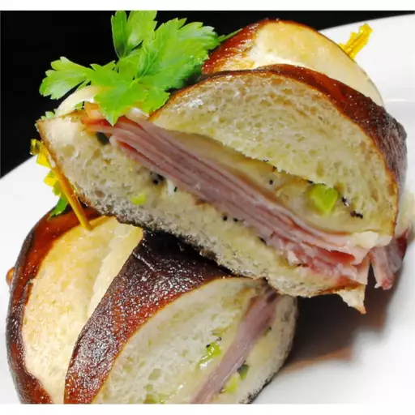

Ham Sandwich

HOT HAM AND CHEESE SANDWICHES
Don't settle for ordinary ham and cheese sandwiches when you can make something deliciously different. The horseradish mustard dressing perfectly compliments the ham.
Ingredients
- ¼ cup butter, softened
- 2 tablespoons prepared horseradish mustard
- 2 tablespoons chopped onions
- 1 teaspoon poppy seeds
- 1 teaspoon dill seed
- 8 slices Swiss cheese
- 8 slices cooked ham
- 8 hamburger buns
Steps
- Preheat oven to 250 degrees F (120 degrees C).
- Combine butter, mustard, onions, poppy seeds and dill seed. Spread insides of buns with this mixture. Place a slice of cheese and a slice of ham inside each bun.
- Wrap buns in foil and place in preheated oven. Bake for 15 to 20 minutes, until cheese has melted.